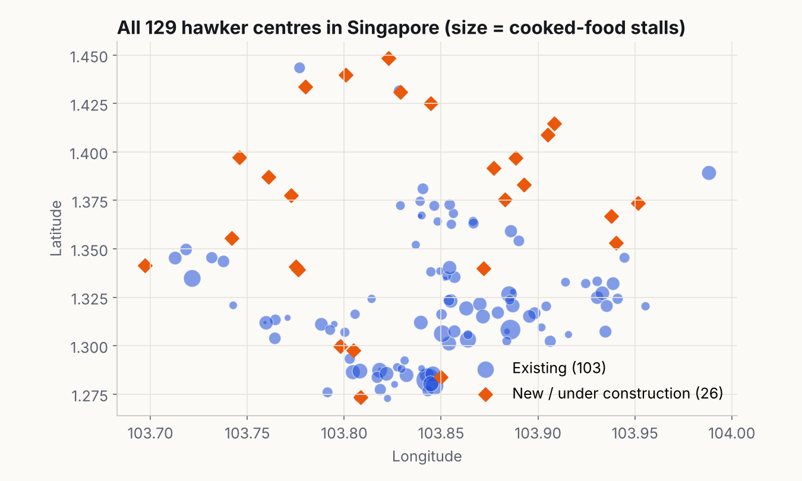
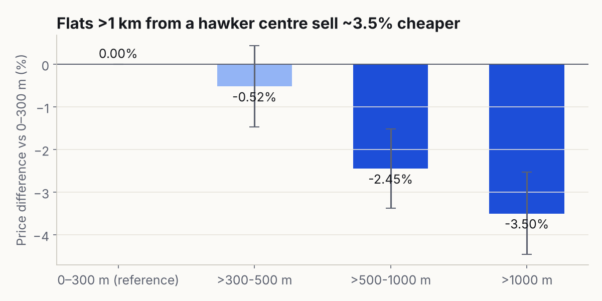
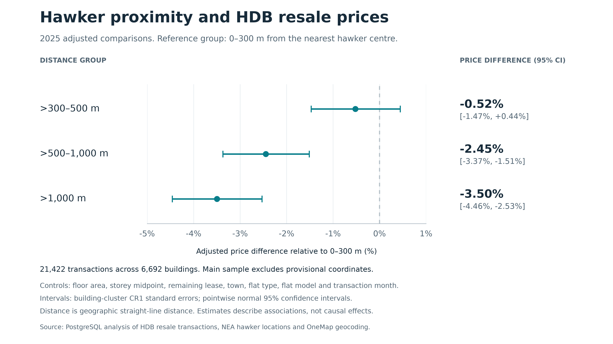
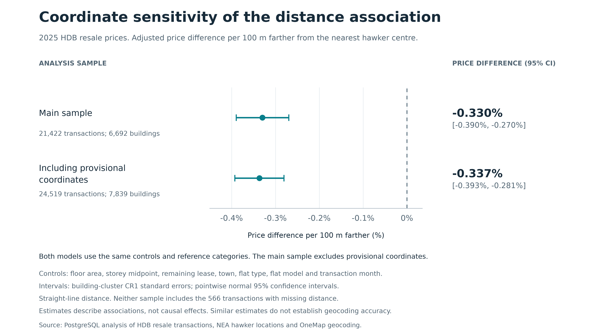
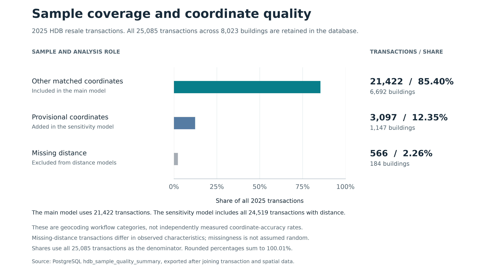

Spatial SQL · PostgreSQL / PostGIS · 2026
Hawker centres and HDB resale prices
Do flats near a hawker centre sell for more? A PostgreSQL + PostGIS study of 25,085 resale transactions in Singapore.
- PostgreSQL
- PostGIS
- SQL
- OneMap API
- Python
- matplotlib
- WSL Ubuntu
Project film · captions on screen, no audio · Download MP4
01 / The question
Hawker centres are part of daily life in Singapore, but does living near one show up in the price of a flat? I joined every 2025 HDB resale transaction with the National Environment Agency's hawker centre locations and asked: after controlling for floor area, storey, remaining lease, town, flat type, flat model and month, do flats at different distances sell for different prices? Every step, including the regression, runs inside the database.
02 / Process
How I built it
- 01
Load and clean HDB data
Imported 240,807 resale records (2017 onwards) into PostgreSQL unchanged, then built a cleaned 2025 view of 25,085 transactions: numeric types, storey mid-points, lease in months, checks for missing and non-positive values.
- 02
Geocode 8,023 blocks
De-duplicated addresses into 8,023 blocks and queried the OneMap API for each, saving every candidate and page. Rule-based matching on block number, street and postcode, with ambiguous cases sent to manual review: 7,839 blocks got coordinates.
- 03
Build a monthly hawker list
Parsed 129 NEA GeoJSON points, dropped 3 markets with no cooked-food stalls, and checked opening-date evidence so each month only counts centres that were actually open (118 to 120 per month).
- 04
Spatial join in PostGIS
For 20,572 block-month pairs, computed the distance to the nearest open hawker centre and the number of centres within set radii, then joined back to all 25,085 transactions without losing a row.
- 05
Regression in SQL
Built a 66-column design matrix (after removing a duplicated dummy), solved OLS on log price inside PostgreSQL, and computed building-clustered (CR1) standard errors and 95% intervals.
- 06
Robustness checks
Re-ran with provisional coordinates included (24,519 transactions), fitted a distance-band model against 0–300 m, and compared missing and provisional samples for selection bias. Exported CSVs, charts and a pg_dump backup.
03 / Visualisation
What the data shows





04 / Results
Outcome
| Sample | Transactions | Price per +100 m | 95% CI |
|---|---|---|---|
| Main sample | 21,422 | −0.330% | −0.390% to −0.270% |
| With provisional coordinates | 24,519 | −0.337% | −0.393% to −0.281% |
| Distance > 1 km vs 0–300 m | 21,422 | −3.50% | −4.46% to −2.53% |
- Holding flat characteristics, town and month fixed, every extra 100 m to the nearest hawker centre is associated with a 0.33% lower resale price.
- The effect is stable when uncertain coordinates are added, and grows with distance (−2.4% at 500–1,000 m, −3.5% beyond 1 km).
- This is an association, not proof of cause: MRT distance and distance to the city centre are not yet controlled for.
- Everything is reproducible from SQL scripts and a database backup; Python only draws the charts.